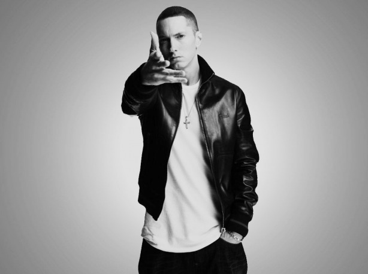

Marshall Bruce Mathers III
Marshall Bruce Mathers III (born October 17, 1972), known professionally as Eminem (/ˌɛminɛm/; formerly stylized as EMINƎM), is an American rapper, songwriter, and record producer. He is credited with popularizing hip hop in middle America and is critically acclaimed as one of the greatest rappers of all time. Eminem's global success and acclaimed works are widely regarded as having broken racial barriers for the acceptance of white rappers in popular music. While much of his transgressive work during the late 1990s and early 2000s made him widely controversial, he came to be a representation of popular angst of the American underclass, and has been cited as an influence for many artists of various genres.
1972
Marshall Bruce Mathers III was born on October 17, 1972, in St. Joseph, Missouri, the only child of Marshall Bruce Mathers Jr. and Deborah Rae "Debbie" (née Nelson). He is of English, Scottish, German, German Swiss, Polish and Luxembourgish ancestry. His mother nearly died during her 73-hour labor with him. Eminem's parents were in a band called Daddy Warbucks, playing in Ramada Inns along the Dakotas-Montana border before they separated. Eminem's father, Bruce Jr., left the family, moving to California after having two other children: Michael and Sarah. His mother, Debbie, later had a son named Nathan "Nate" Kane Samara. During his childhood, Eminem and his mother shuttled between Detroit and Missouri, rarely staying in one house for more than a year or two and living primarily with family members. In Missouri, they lived in several places, including St. Joseph, Savannah and Kansas City.
1982
As a teenager, Eminem wrote letters to his father. Debbie said that they all came back marked "return to sender". When he was a child, a bully named D'Angelo Bailey severely injured Eminem's head in an assault, an incident which Eminem later recounted (with comic exaggeration) on the song "Brain Damage". Debbie filed a lawsuit against the public school for this in 1982. The suit was dismissed the following year by the Macomb County, Michigan judge, who said the schools were immune from lawsuits. Eminem and his mother lived for much of his youth in a working-class, primarily black, Detroit neighborhood. He and Debbie were one of three white households on their block, and Eminem was beaten several times by black youths.
1987
Eminem's home life was seldom stable; he frequently fought with his mother, whom a social worker described as having a "very suspicious, almost paranoid personality". When her son became famous, Debbie dismissed criticisms, saying that she had sheltered him and was responsible for his success. In 1987, Debbie allowed runaway Kimberly Anne "Kim" Scott to stay at their home. Several years later, Eminem began an on-and-off relationship with Scott. After spending three years in ninth grade due to truancy and poor grades, he dropped out of Lincoln High School at age 17. Although interested in English, Eminem never explored literature (preferring comic books) and he disliked math and social studies. Eminem worked at several jobs to help his mother pay the bills. (One of the jobs he had was with Little Caesar's Pizza in Warren, Michigan.) He later said she often threw him out of the house anyway, often after taking most of his paycheck. When she left to play bingo, he would blast the stereo and write songs.
1988
In 1988, he went by the stage name MC Double M and formed his first group New Jacks and made a self-titled demo tape with DJ Butter Fingers. In 1989, they later joined Bassmint Productions who later changed their name to Soul Intent in 1992 with rapper Proof and other childhood friends. They released a self-titled EP in 1995 featuring Proof. Eminem also made his first music video appearance in 1992 in a song titled, "Do-Da-Dippity", by Champtown. Later in 1996, Eminem and Proof teamed up with four other rappers to form The Dirty Dozen (D12), who released their first album Devil's Night in 2001. Eminem had his first run-in with the law at age 20, when he was arrested for his involvement in a drive-by shooting with a paintball gun. The case was dismissed when the victim did not appear in court
1989
Eminem has been scrutinized, both as a rapper and personality. He was twice married to Kimberly Anne Scott; he met Scott in high school while he stood on a table with his shirt off rapping LL Cool J's "I'm Bad". Scott and her twin sister Dawn had run away from home; they moved in with Eminem and his mother when he was 15 and he began an on-and-off relationship with Scott in 1989. click here to see a picture
1991
As a child, he was interested in storytelling, aspiring to be a comic book artist before discovering hip hop. Eminem heard his first rap song ("Reckless", featuring Ice-T) on the Breakin' soundtrack, a gift from Debbie's half-brother Ronnie Polkingharn. His uncle was close to the boy and later became a musical mentor to him. When Polkingharn committed suicide in 1991, Eminem stopped speaking publicly for days and did not attend his funeral.
1995
Mathers and Scott were married in 1999 and divorced in 2001. Their daughter Hailie was born on December 25, 1995.
1996 - INFINITE
Eminem was soon signed to Jeff and Mark Bass's F.B.T. Productions and recorded his debut album Infinite for their independent Web Entertainment label. The album was a commercial failure upon its release in 1996. One lyrical subject of Infinite was his struggle to raise his newborn daughter, Hailie Jade Scott Mathers, on little money. During this period, Eminem's rhyming style, primarily inspired by rappers Nas, Esham and AZ, lacked the comically violent slant for which he later became known. Detroit disc jockeys largely ignored Infinite and the feedback Eminem did receive ("Why don't you go into rock and roll?") led him to craft angrier, moodier tracks. At this time Eminem and Kim Scott lived in a crime-ridden neighborhood and their house was robbed several times. Eminem cooked and washed dishes for minimum wage at Gilbert's Lodge, a family-style restaurant at St. Clair Shores. His former boss described him as becoming a model employee, as he worked 60 hours a week for six months after Hailie's birth. He was fired shortly before Christmas and later said, "It was, like, five days before Christmas, which is Hailie's birthday. I had, like, forty dollars to get her something." After the release of Infinite, his personal problems and substance abuse culminated in a suicide attempt. By March 1997 he was fired from Gilbert's Lodge for the last time and lived in his mother's mobile home with Kim and Hailie.
1997
The feud began in 1997 when Eminem was throwing a party to promote his debut EP, Slim Shady EP. He gave Joseph Bruce (Violent J from Insane Clown Posse) a flyer which stated "Featuring appearances by Esham, Kid Rock, and ICP (maybe)". Bruce asked why Eminem was promoting a possible Insane Clown Posse appearance without first contacting the group. Eminem explained, "It says 'maybe.' Maybe you will be there; I don't know. That's why I'm asking you right now. You guys comin' to my release party, or what?" Bruce, upset over not being consulted, responded, "Fuck no, I ain't coming to your party. We might have, if you would've asked us first, before putting us on the fuckin' flyer like this."
1998
Bad Meets Evil is formed in 1998
1999 - THE SLIM SHADY LP
After his debut album Infinite (1996) and the extended play Slim Shady EP (1997), Eminem signed with Dr. Dre's Aftermath Entertainment and subsequently achieved mainstream popularity in 1999 with The Slim Shady LP.
In 1999, Eminem's mother sued him for $10 million, claiming he was slandering her on The Slim Shady LP. Litigation concluded in 2001, resulting in an award of $1,600 for her damages. On June 3, 2000, Eminem was arrested during an altercation with Douglas Dail at a car-audio store in Royal Oak, Michigan, when he pulled out an unloaded gun and pointed it at the ground. The next day, in Warren, Michigan, he was arrested again for assaulting John Guerra in the parking lot of the Hot Rock Café when he saw him kissing his wife. Eminem recreated the Guerra assault in "The Kiss (Skit)" on The Eminem Show. He pleaded guilty to possession of a concealed weapon and assault, receiving two years' probation; however, Guerra's assault charge was dropped as part of the plea agreement. On July 7, 2000, Kim attempted suicide by slashing her wrists, later suing Eminem for defamation after describing her violent death in "Kim".
Eminem released The Slim Shady LP in February 1999. Although it was one of the year's most popular albums (certified triple platinum by the end of the year), he was accused of imitating the style and subject matter of underground rapper Cage. The album's popularity was accompanied by controversy over its lyrics; in "97 Bonnie and Clyde" Eminem describes a trip with his infant daughter when he disposes of his wife's body and in "Guilty Conscience" which encourages a man to murder his wife and her lover. "Guilty Conscience" marked the beginning of a friendship and musical bond between Dr. Dre and Eminem. The label-mates later collaborated on a number of hit songs ("Forgot About Dre" and "What's the Difference" while also providing uncredited vocals on "The Watcher" from Dr. Dre's album 2001, "Bitch Please II" from The Marshall Mathers LP, "Say What You Say" from The Eminem Show, "Encore/Curtains Down" from Encore and "Old Time's Sake" and "Crack a Bottle" from Relapse) and Dre made at least one guest appearance on each of Eminem's Aftermath albums. The Slim Shady LP has been certified quadruple platinum by the RIAA.
Following Eminem's multiplatinum record sales, Interscope offered him his own label; he and Paul Rosenberg founded Shady Records in late 1999. Eminem signed his Detroit collective, D12 and rapper Obie Trice to the label and signed 50 Cent in a 2002 joint venture with Dr. Dre's Aftermath label. In 2003, Eminem and Dr. Dre added Atlanta rapper Stat Quo to the Shady-Aftermath roster. DJ Green Lantern, Eminem's former DJ, was with Shady Records until a dispute related to the 50 Cent-Jadakiss feud forced him to leave the label. The Alchemist is currently Eminem's tour DJ. In 2005 Eminem signed another Atlanta rapper, Bobby Creekwater and West Coast rapper Cashis to Shady Records.
2000 - THE MARSHALL MATHERS LP
Recorded from 1999 to 2000, The Marshall Mathers LP was released in May 2000. It sold 1.76 million copies in its first week, breaking US records held by Snoop Dogg's Doggystyle for fastest-selling hip hop album and Britney Spears' ...Baby One More Time for fastest-selling solo album. The first single from the album, "The Real Slim Shady", was a success despite controversies about Eminem's insults and dubious claims about celebrities (for example, that Christina Aguilera had performed oral sex on Carson Daly and Fred Durst). In his second single, "The Way I Am", he reveals the pressure from his record company to top "My Name Is". Although Eminem parodied shock rocker Marilyn Manson in the music video for "My Name Is", they are reportedly on good terms; Manson is mentioned in "The Way I Am", appeared in its music video and has performed a live remix of the song with Eminem. In the third single, "Stan" (which samples Dido's "Thank You"), Eminem tries to deal with his new fame, assuming the persona of a deranged fan who kills himself and his pregnant girlfriend (mirroring "'97 Bonnie & Clyde" from The Slim Shady LP). Q called "Stan" the third-greatest rap song of all time, and it was ranked tenth in a Top40-Charts.com survey. The song has since been ranked 296th on Rolling Stone's "500 Greatest Songs of All Time" list. In July 2000, Eminem was the first white artist to appear on the cover of The Source. The Marshall Mathers LP was certified Diamond by the RIAA in March 2011 and sold 21 million copies worldwide. In 2000 Eminem also appeared in the Up in Smoke Tour with rappers Dr. Dre, Snoop Dogg, Xzibit and Ice Cube and the Family Values Tour with Limp Bizkit, headlining the Anger Management Tour with Papa Roach, Ludacris and Xzibit.
On October 26, 2000, Eminem was scheduled to perform at Toronto's SkyDome when Ontario Attorney General Jim Flaherty said that Eminem should not be allowed to enter the country. "I personally don't want anyone coming to Canada who will come here and advocate violence against women", he said. Flaherty also said that he was "disgusted" when he read the lyrics of "Kill You", which includes the lines "Slut, you think I won't choke no whore / Till the vocal cords don't work in her throat no more?" Although public reaction to Flaherty's position was generally negative, with barring Eminem from the country considered a free-speech issue, Liberal MPP Michael Bryant suggested that hate crime charges should be brought against Eminem for advocating violence against women in his lyrics. Robert Everett-Green wrote in a Globe and Mail editorial, "Being offensive is Eminem's job description". Eminem's Toronto concert went on as planned.
On November 21, 2000, Eminem published Angry Blonde, a non-fiction book featuring a commentary of several of his own songs, along with several previously unpublished photographs.
2001
Eminem performed with Elton John at the 43rd Grammy Awards ceremony in 2001, with the Gay & Lesbian Alliance Against Defamation (GLAAD, an organization which considered Eminem's lyrics homophobic) condemning John's decision to perform with Eminem. Entertainment Weekly placed the appearance on its end-of-decade "best-of" list: "It was the hug heard 'round the world. Eminem, under fire for homophobic lyrics, shared the stage with a gay icon for a performance of 'Stan' that would have been memorable in any context." On February 21, the day of the awards ceremony, GLAAD held a protest outside the Staples Center (the ceremony's venue). Eminem was also the only guest artist to appear on fellow rapper Jay-Z's critically acclaimed album The Blueprint, producing and rapping on the song "Renegade".
On December 5, 2006, the compilation album Eminem Presents: The Re-Up was released on Shady Records. The project began as a mixtape, but when Eminem found the material better than expected he released it as an album. The Re-Up was intended to introduce Stat Quo, Cashis and Bobby Creekwater. While he was recording Infinite, Eminem, Proof and Kon Artis assembled a group of fellow rappers now known as D12, short for "Detroit Twelve" or "Dirty Dozen", who performed in a style similar to Wu-Tang Clan. In 2001 D12's debut album, Devil's Night, was released. The first single from the album was "Shit on You", followed by "Purple Pills" (an ode to recreational drug use) and "Fight Music". "Purple Pills" was rewritten for radio and television, removing many of the song's references to drugs and sex and renamed "Purple Hills".
Sanitation worker DeAngelo Bailey sued Eminem for $1 million in 2001, accusing him of invading his privacy by publicizing information placing him in a false light in "Brain Damage", a song that portrays him as a violent school bully. Although Bailey admitted picking on Eminem in school, he said he merely "bumped" him and gave him a "little shove". The lawsuit was dismissed on October 20, 2003; Judge Deborah Servitto, who wrote a portion of her opinion in rap-like rhyming verse, ruled that it was clear to the public that the lyrics were exaggerated.
On June 28, 2001, Eminem was sentenced to one year's probation and community service and was fined about $2,000 on weapon charges stemming from an argument with an employee of Psychopathic Records.
2002 - THE EMINEM SHOW
Credited for popularizing hip hop to a Middle American audience, Eminem's unprecedented global commercial success and acclaimed works for a white rapper is widely recognized for breaking racial barriers for the acceptance of white rappers in popular music. Rising from rags to riches, Eminem's anger-fueled music represented widespread angst and the reality of American underclass. He has been greatly influential for artists of various genres. Stephen Hill, the then vice president of African American themed television network BET (Black Entertainment Television), said in 2002,
Eminem has spoken publicly about his addiction to prescription drugs, including Vicodin, Ambien and Valium. According to friend and fellow D12 member Proof, Eminem first straightened out in 2002. During the production of 8 Mile, Eminem, working 16 hours a day, developed insomnia. An associate gave him an Ambien tablet which "knocked [him] out", encouraging him to obtain a prescription. This was Eminem's first experience of drug addiction, which would affect him for several years. Near the end of production on Encore, he would "just go into the studio and goof off [with] a pocketful of pills". Eminem began taking the drugs to "feel normal", taking a "ridiculous amount ... I could consume anywhere from 40 to 60 Valium [in a day]. Vicodin, maybe 30." The drugs would put him to sleep for no more than two hours, after which he would take more. Eminem's weight increased to 230 pounds (100 kg) and he was regularly eating fast food: "The kids behind the counter knew me – it wouldn't even faze them. Or I'd sit up at Denny's or Big Boy and just eat by myself. It was sad." Eminem became less recognizable due to his weight gain and once overheard two teenagers arguing about whether or not it was him: "Eminem ain't fat".
Eminem has written several songs referring to a relationship with R&B singer Mariah Carey, although she denies that they were ever intimate. Eminem has referenced her on many songs, including "When the Music Stops", "Superman", "Jimmy Crack Corn", "Bagpipes from Baghdad" and "The Warning". While "Superman" was released in 2003, Carey released a song entitled "Clown" on her album Charmbracelet, released in 2002, which makes similar references in line with her 2009 hit "Obsessed".
Eminem took Bruce's response as a personal offense, subsequently attacking the group in radio interviews. Bruce and Utsler responded with a parody of Eminem's "My Name Is" entitled "Slim Anus" and other tracks including "Nuttin' But a Bitch Thang" and "Please Don't Hate Me". Eminem insulted Insane Clown Posse on various tracks from his album The Marshall Mathers LP (2000), including "Marshall Mathers" and "Ken Kaniff". In 2002, Eminem briefly dissed them on his single "Business" from The Eminem Show.
In 2002, the BBC said that the perception of Eminem as a "modern-day William Shakespeare" was comparable to the reception of American singer Bob Dylan: "Not since Bob Dylan's heyday in the mid-1960s has an artist's output been subjected to such intense academic scrutiny as an exercise in contemporary soul-searching. US critics point to [Eminem's] vivid portraits of disenfranchised lives - using the stark, direct language of the street - as an accurate reflection of social injustice." In addition, the BBC highlighted that, "Where parents once recoiled in horror [to his music], there now seems a greater willingness to acknowledge a music that is striking such a chord among the American young, angry white underclass." Dan Ozzi of Vice highlighted that Eminem during the early 2000s was "the one artist high school kids seemed to unanimously connect with. ... he represented everything high school years are about: blind rage, misguided rebellion, adolescent frustration. He was like a human middle finger. An X-rated Dennis the Menace for a dial-up modem generation."
Writing for Spin in 2002, rock critic Alan Light compared Eminem to the Beatles' John Lennon: "Eminem is even starting to bear a resemblance to one of those rock icons ... Marshall Mathers is becoming something like this generation's John Lennon ... Lennon and Eminem were both subjects of pickets and protests; they both wrote songs about troubled relationships with their mothers; they both wrote about their strange public lives with their wives; they both wrote about how much they loved their kids. Lennon, of course, was able to find ways to use his voice to advocate for peace rather than just blasting away at litigious family members and various pop stars, but still, few other pop musicians since Lennon have found a way to render their private psychodramas into compelling art as effectively as Eminem."
On March 31, 2002, French jazz pianist Jacques Loussier filed a $10 million lawsuit against Eminem and Dr. Dre, claiming that the beat for "Kill You" was taken from his instrumental "Pulsion". Loussier demanded that sales of The Marshall Mathers LP be halted and any remaining copies destroyed. The case was later settled out of court.
The animus between Canibus and Eminem started when Canibus and Wyclef Jean confronted Eminem and asked him if he ghost-wrote the track "The Ripper Strikes Back" by LL Cool J. Eminem denied that he wrote the track. After he was confronted, he said Canibus was "rude" to him. Two years later, Canibus went to see Eminem on the Warped Tour and apologized to him for his reactions and asked him if he still wanted the track. Eminem agreed, but when he heard the track "Phuck U" from Canibus' album 2000 B.C., he thought the track was directed at him and LL Cool J. Shortly afterwards, Eminem released his 2nd album The Marshall Mathers LP (2000) and Canibus decided to continue the "story" of Eminem's single "Stan". He titled the track "U Didn't Care" and it continued to take shots at Eminem. Eminem decided to take more shots at Canibus on his album The Eminem Show (2002) on tracks such as "Say What You Say", "When The Music Stops" and "Square Dance". Even though Canibus did not immediately respond to the tracks, Eminem continued to take shots at him, including a track Eminem was featured on with Xzibit, titled "My Name" from Xzibit's album Man vs. Machine. On November 19, 2002, Canibus responded with the track titled" Dr.C PhD". Over a year later Eminem released the track "Can-I-Bitch". He attacked Canibus in a humorous matter. Since then the hostilities have cooled down, but Canibus tried to provoke a re-ignition of it when he leaked a track titled "Air Strike (Pop Killer)", that featured vocal parts of D12, where Canibus takes shots at Eminem and his deceased friend Proof. D12 member Swift responded to the record publicly and had the following to say about DZK (another rapper featured on the track). "[He] asked us to do a track with him when he already was teamed up with Canibus without us knowing. They dissed Em, took our verses, and added them to the song, so they can bring traffic and make it seem like we were turning on Em ... as a desperate attempt to be heard after ducking and dodging Em for 7 years. It was a straight hoe move."
2003
After small roles in the 2001 film The Wash and as an extra in the 1998 Korn music video for "Got the Life" (during which he gave the band a demo tape), Eminem made his Hollywood debut in the semi-autobiographical 2002 film 8 Mile. He said it was a representation of growing up in Detroit rather than an account of his life. He recorded several new songs for the soundtrack, including "Lose Yourself" (which won an Academy Award for Best Original Song in 2003 and became the longest-running No. 1 hip hop single in history). Eminem was absent from the ceremony and co-composer Luis Resto accepted the award.
Eminem's conflict with Ja Rule started after 50 Cent signed to Shady Records and Aftermath. Ja Rule stated that he had a problem with Eminem and Dr. Dre of signing someone he had conflict with. On November 19, Ja Rule and Irv Gotti were special guests on Star and Bucwild's morning show on Hot 97 NYC. Gotti claimed to have "legal documents" referring to an order of protection 50 Cent "has on him". Ja Rule threatened, that if 50 Cent released any diss track, he would take action towards his two producers. However, Dr. Dre was the one who produced 50 Cent's track "Back Down" in 2003 from the album Get Rich Or Die Tryin', which included lyrics insulting not only Murder Inc., but Ja Rule's mother, wife and children; in the song, he raps, "Your Mami, your Papi, that bitch you chasin' your lil dirty ass kids, I'll fuckin' erase them."
In 2003, Eminem, a lifelong fan of Tupac, provided production work for three tracks on the Tupac Resurrection soundtrack. He would follow this up the next year by producing 12 of the 16 tracks on Tupac's Loyal to the Game album. On December 8, 2003, the United States Secret Service said that it was "looking into" allegations that Eminem had threatened the President of the United States. The cause for concern was the lyrics of "We As Americans" ("Fuck money / I don't rap for dead presidents / I'd rather see the president dead / It's never been said, but I set precedents"), which was later released on a bonus CD with the deluxe edition of Encore.
In 2003, rapper Benzino, a silent co-owner of The Source, released a diss single titled "Pull Your Skirt Up" which took aim at Eminem. The track attacked Eminem's "street cred" and accused him of being a tool of the music industry. Eminem had been discovered by The Source after writer Rigo Morales featured him in the magazine's famed monthly "Unsigned Hype" column.
On December 8, 2003, the United States Secret Service reported that it was "looking into" allegations that Eminem threatened U.S. president George W. Bush in "We As Americans" (an unreleased bootleg at the time), with the lyrics: "Fuck money, I don't rap for dead presidents. I'd rather see the president dead, it's never been said but I set precedents." The incident was included in the video for "Mosh", as a newspaper clipping on a wall with articles about unfortunate incidents in Bush's career. "We As Americans" eventually appeared on Encore's deluxe-edition bonus disc, with altered lyrics.
2004 - ENCORE
After their debut, D12 took a three-year break from the studio. They reunited in 2004 for their second album, D12 World, which included the hit singles "My Band" and "How Come". "American Psycho 2" featuring Cypress Hill member, B-Real, was another popular hit. According to D12 member Bizarre, Eminem was not featured on his album Blue Cheese & Coney Island because "he's busy doing his thing".
Despite its lead single's humorous theme, Encore explored serious subject matter with the anti-war song "Mosh", which criticized President George W. Bush as "This weapon of mass destruction that we call our president", with lyrics including "Fuck Bush." On October 25, 2004, a week before the 2004 US Presidential election, Eminem released the video for "Mosh" on the Internet. In it, Eminem gathers an army (including rapper Lloyd Banks) of Bush-administration victims and leads them to the White House. When they break in, it is learned that they are there to register to vote; the video ends with "VOTE Tuesday November 2." After Bush's reelection, the video's ending was changed to Eminem and the protesters invading the White House during a speech by the president. Also in 2004 Eminem launched a satellite music channel, Shade 45, on Sirius radio, which was described by his manager as "essentially a destination to get and hear things that other people aren't playing."
Eminem has expressed his political views in multiple songs, however, he has refrained from direct endorsements of politicians, focusing more on criticisms instead. The first was "Mosh", which was released in 2004, a few weeks before the 2004 United States presidential election, and heavily criticized then-president George W. Bush but did not directly endorse John Kerry either. He would not express political views again until the 2016 United States presidential election when he released "Campaign Speech", which criticized presidential candidate Donald Trump. The following year, he criticized Trump in a freestyle titled "The Storm". In the freestyle, he expressed support for former San Francisco 49ers quarterback Colin Kaepernick and the U.S. national anthem protests, and expressed his displeasure for any of his fans that support Trump. In his song "Darkness", he heavily references the 2017 Las Vegas mass shooting, and at the end of the music video expresses his support for gun control. The week before the 2020 United States presidential election, he approved his song "Lose Yourself" to be used in a campaign video for Joe Biden.
Eminem was the executive producer of D12's first two albums (Devil's Night and D12 World), Obie Trice's Cheers and Second Round's on Me and 50 Cent's Get Rich or Die Tryin' and The Massacre. He has produced songs for other rappers such as Jadakiss' "Welcome To D-Block", Jay-Z's "Renegade" and "Moment of Clarity", Lloyd Banks' "On Fire", "Warrior Part 2" and "Hands Up", Tony Yayo's "Drama Setter", Trick-Trick's "Welcome 2 Detroit" and Xzibit's "My Name" and "Don't Approach Me". Most of The Eminem Show was produced by Eminem and his longtime collaborator, Jeff Bass, and Eminem co-produced Encore with Dr. Dre. In 2004, Eminem was co-executive producer of 2Pac's posthumous album Loyal to the Game with Shakur's mother, Afeni. He produced the UK number-one single "Ghetto Gospel", featuring Elton John; "The Cross", from the Nas album God's Son; and eight tracks on Obie Trice's 2006 album Second Round's on Me (also appearing on "There They Go"). Eminem produced several tracks on Trick-Trick's The Villain (appearing on "Who Want It") and produced four tracks on Cashis' 2013 album The County Hound 2.
Encore, released in 2004, was another success, but not as successful as his previous albums. Its sales were partially driven by the first single, "Just Lose It", which contained slurs directed toward Michael Jackson. On October 12, 2004, a week after the release of "Just Lose It", Jackson phoned Steve Harvey's radio show to report his displeasure with its video (which parodies Jackson's child molestation trial, plastic surgery and the 1984 incident when Jackson's hair caught fire during the filming of a commercial). In the song, Eminem says, "That's not a stab at Michael / That's just a metaphor / I'm just psycho." Many of Jackson's friends and supporters spoke out against the video, including Stevie Wonder, who described it as "kicking a man while he's down" and "bullshit", and Steve Harvey (who said, "Eminem has lost his ghetto pass. We want the pass back"). The video also parodied Pee-wee Herman, MC Hammer and Madonna during her Blond Ambition period. "Weird Al" Yankovic, who parodied the Eminem song "Lose Yourself" on "Couch Potato" for his 2003 album Poodle Hat, told the Chicago Sun-Times about Jackson's protest: "Last year, Eminem forced me to halt production on the video for my 'Lose Yourself' parody because he somehow thought that it would be harmful to his image or career. So the irony of this situation with Michael is not lost on me." Although Black Entertainment Television stopped playing the video, MTV announced that it would continue to air it. The Source, through CEO Raymond "Benzino" Scott, called for the video to be pulled, the song removed from the album and Eminem to apologize publicly to Jackson. In 2007, Jackson and Sony bought Famous Music from Viacom, giving him the rights to songs by Eminem, Shakira, Beck and others.
In 2004, Moby praised Eminem for criticizing then-U.S. president George W. Bush in the song "Mosh", a track from Encore. The feud has since ended.
2005
Insane Clown Posse talked about the feud being squashed in an interview with MTV, saying that Proof squashed the conflict in 2005, which was followed by a bowling game between members of D12 and Psychopathic Records. Violent J stated that, "He contacted us and we had a bowling game – it was really cool. We're something different. They could have skipped over us and said forget them, but they included us and said let's squash it."
Eminem began his first US concert tour in three years in the summer of 2005 with the Anger Management 3 Tour, featuring 50 Cent, G-Unit, Lil Jon, D12, Obie Trice and the Alchemist, but in August he canceled the European leg of the tour, later announcing that he had entered drug rehabilitation for treatment of a "dependency on sleep medication". Meanwhile, industry insiders speculated that Eminem was considering retirement, while rumors circulated that a double album titled The Funeral would be released. In July, the Detroit Free Press reported a possible final bow for Eminem as a solo performer, quoting members of his inner circle as saying that he would embrace the roles of producer and label executive. A greatest hits album, Curtain Call: The Hits, was released on December 6, 2005, by Aftermath Entertainment, and sold nearly 441,000 copies in the US in its first week, marking Eminem's fourth consecutive number-one album on the Billboard Hot 200, and was certified double platinum by the RIAA. However, Eminem suggested that month on WKQI's "Mojo in the Morning" show that he would be taking a break as an artist: "I'm at a point in my life right now where I feel like I don't know where my career is going ... This is the reason that we called it 'Curtain Call' because this could be the final thing. We don't know." Eminem was ranked 58th in Bernard Goldberg's 2005 book 100 People Who Are Screwing Up America. Goldberg cited a 2001 column by Bob Herbert of The New York Times, in which Herbert wrote, "In Eminem's world, all women are whores and he is eager to rape and murder them", and cited the song "No One's Iller" from the Slim Shady EP as an example of Eminem's misogyny.
2006
In 2006, Eminem was accused of assaulting Miad Jarbou, a resident of Royal Oak, Michigan, in the bathroom of a Detroit strip club, but was never charged. Two years later in 2008, Jarbou sued Eminem for more than $25,000 in damages.
In April 2006, Proof, who was Eminem's childhood friend, was murdered. Eight months later, Eminem released a compilation album titled Eminem Presents: The Re-Up that featured Proof and other Shady Records artists.
2007
In 2007, Eminem's music-publishing company (Eight Mile Style) and Martin Affiliated sued Apple Inc. and Aftermath Entertainment, claiming that Aftermath was not authorized to negotiate a deal with Apple for digital downloads of 93 Eminem songs on Apple's iTunes. The case against Apple was settled shortly after the trial began, in late September 2009.
In September 2007, Eminem called New York radio station WQHT during an interview with 50 Cent, saying that he was "in limbo" and "debating" about when (or if) he would release another album: "I'm always working – I'm always in the studio. It feels good right now, the energy of the label. For a while, I didn't want to go back to the studio ... I went through some personal things. I'm coming out of those personal things [and] it feels good."
In December 2007, Eminem was hospitalized after a methadone overdose. He had first bought from a dealer who had told him it was "just like Vicodin, and easier on [your] liver". He continued to buy more until he collapsed in his bathroom one night and was rushed to the hospital. Doctors there told him he had ingested the equivalent of four bags of heroin and was "about two hours from dying". After missing Christmas with his children, Eminem checked himself out of the facility, weak and not fully detoxed. He tore the meniscus in his knee after falling asleep on his sofa, requiring surgery; after he returned home, he had a seizure. His drug use "ramped right back to where it was before" within a month. Eminem began to attend church meetings to get clean, but after he was asked for autographs he sought help from a rehabilitation counselor. He began an exercise program that emphasized running. Elton John was a mentor during this period, calling Eminem once a week to check on him. Eminem has been sober since April 20, 2008.
2008
Eminem has also been included and ranked in several publications' lists. Rolling Stone included him in its list of the 100 Greatest Artists of All Time and the 100 Greatest Songwriters of All Time. He was ranked 9th on MTV's Greatest MCs of All Time list. He was ranked 13th on MTV's 22 Greatest Voices in Music list and 79th on the VH1 100 Greatest Artists of All Time lists. He was ranked 82nd on Rolling Stone's "The Immortals" list. In 2010, MTV Portugal ranked Eminem the 7th biggest icon in popular music history. In 2012, The Source ranked him 6th on their list of the Top 50 Lyricists of All Time, while About.com ranked him 7th on its list of the 50 Greatest MCs of Our Time (1987-2007). In 2015, Eminem was placed third on "The 10 Best Rappers of All Time" list by Billboard. In 2008, Vibe readers named Eminem the Best Rapper Alive. In 2011, Eminem was labelled the "King of Hip-Hop" by Rolling Stone based on an analysis of album sales, chart positions, YouTube views, social media following, concert grosses, industry awards and critical ratings of solo rappers who released music from 2009 to the first half of 2011. Eminem was also nominated in the Rock and Roll Hall of Fame Class of 2022, alongside Duran Duran and Dolly Parton.
Eminem appeared on his Shade 45 Sirius channel in September 2008, saying: "Right now I'm kinda just concentrating on my own stuff, for right now and just banging out tracks and producing a lot of stuff. You know, the more I keep producing the better it seems like I get 'cause I just start knowing stuff." Interscope confirmed that a new album would be released in spring 2009. In December 2008, Eminem provided more details about the album, entitled Relapse: "Me and Dre are back in the lab like the old days, man. Dre will end up producing the majority of the tracks on 'Relapse'. We are up to our old mischievous ways ... let's just leave it at that."
On October 21, 2008, his autobiography The Way I Am was published. The book was first published on October 21, 2008, by Dutton Adult. It is a collection of Eminem's personal stories, reflections, photographs, original artwork, and original lyric sheets from "Stan" and "The Real Slim Shady". It details his struggles with poverty, drugs, fame, heartbreak, family and depression, along with stories about his rise to fame and commentary on past controversies. The book is illustrated with never before published photos of Eminem's life. It also contains original drawings, previously unpublished lyric sheets, and other rare memorabilia. The autobiography is named after the song of the same name.
2009 - RELAPSE
In 2009, Carey released "Obsessed", about an obsessed man who claims to have a relationship with her. Cannon claimed that the song was not an insult directed at Eminem. However, Eminem responded in late July 2009 by releasing a track titled "The Warning". It contained samples of voice mail recordings which Eminem claimed were left by Carey when the two were together. Eminem also hinted that he had other evidence of their relationship in his possession. A little over a year later in September 2010, Cannon responded with the song "I'm a Slick Rick", making fun of Eminem.
On December 18, 2020, a deluxe edition of the album, titled Music to Be Murdered By - Side B, was released. Similar to Eminem's previous two albums, it was released without any prior announcement. It contains a bonus disc with sixteen new tracks, with guest appearances by Skylar Grey, DJ Premier, Ty Dolla Sign, Dr. Dre, Sly Pyper, MAJ and White Gold. The album's release was accompanied by a music video for "Gnat", directed by Cole Bennett. Music to Be Murdered By - Side B is projected to debut on the Billboard 200 at number 3, with 70,000-80,000 album-equivalent units, including 25,000-30,000 in pure album sales. In the track "Zeus", he apologizes to Rihanna over a song in which he sided with Chris Brown, who pleaded guilty to felony assault involving her in 2009.
According to a March 5, 2009, press release, Eminem would release two new albums that year. Relapse, the first, was released on May 19; its first single and music video, "We Made You", had been released on April 7. Although Relapse did not sell as well as Eminem's previous albums and received mixed reviews, it was a commercial success and re-established his presence in the hip hop world. It sold more than five million copies worldwide. During the 2009 MTV Movie Awards, Sacha Baron Cohen descended on the audience in an angel costume. He landed buttocks-first on Eminem, who stormed out of the ceremony; three days later, Eminem said that the stunt had been staged. On October 30 he headlined at the Voodoo Experience in New Orleans, his first full performance of the year. Eminem's act included several songs from Relapse, many of his older hits and an appearance by D12. On November 19, he announced on his website that Relapse: Refill would be released on December 21. The album was a re-release of Relapse with seven bonus tracks, including "Forever" and "Taking My Ball". Eminem described the CD:
2010 - RECOVERY
Billboard reported that it was the best-selling album of 2010, making Eminem the first artist in Nielsen SoundScan history with two year-end best-selling albums. Recovery is the best-selling digital album in history. Its first single, "Not Afraid", was released on April 29 and debuted atop the Billboard Hot 100; its music video was released on June 4. "Not Afraid" was followed by "Love the Way You Lie", which debuted at number two before rising to the top. Although "Love the Way You Lie" was the best-selling 2010 single in the United Kingdom, it did not reach number one (the first time this has happened in the UK since 1969). Despite criticism of its inconsistency, Recovery received positive reviews from most critics. As of November 21, 2010 , the album had US sales of three million copies. Recovery was the best-selling album worldwide in 2010, joining 2002's best-seller The Eminem Show to give Eminem two worldwide year-end number-one albums. With Recovery, Eminem broke the record for the most successive US number-one albums by a solo artist.
On April 14, 2010, Eminem tweeted: "There is no Relapse 2". Although his followers thought he was not releasing an album, he had changed its title to Recovery and confirmed this by tweeting "Recovery" with a link to his website. He said:
In July 2010, the United States Court of Appeals for the Ninth Circuit ruled in F.B.T. Productions, LLC v. Aftermath Records that F.B.T. Productions and Eminem were owed a royalty of 50 percent of Aftermath's net revenue from licensing his recordings to companies such as Apple, Sprint Corporation, Nextel Communications, Cingular and T-Mobile. In March 2011, the Supreme Court of the United States declined to hear the case.
He appeared at the 2010 BET Awards, performing "Not Afraid" and "Airplanes, Part II" with B.o.B and Keyshia Cole. Later that year, he performed at the Activison E3 concert. In June, Eminem and Jay-Z announced they would perform together in Detroit and New York City, at concerts called The Home & Home Tour. The first two concerts quickly sold out, prompting an additional show in each city. BET called Eminem the number-one rapper of the 21st century. He opened the 2010 MTV Video Music Awards on September 12, performing "Not Afraid" and "Love the Way You Lie" with Rihanna singing the choruses. Due to the success of Recovery and the Home & Home Tour, Eminem was named the 2010 Hottest MC in the Game by MTV and Emcee of the Year by the online magazine HipHopDX. He and Rihanna again collaborated on "Love the Way You Lie (Part II)", the sequel of their hit single. Unlike the original, Rihanna is the lead vocalist and it is sung from the female perspective. In December 2010, the "Great Eminem Recovery" was number one on Billboard's Top 25 Music Moments of 2010. He appeared at the 2011 Grammy Awards on February 13, performing "Love the Way You Lie (Part II)" with Rihanna and Adam Levine and "I Need a Doctor" with Dr. Dre and Skylar Grey. That month it was announced that "Space Bound" would be the fourth single from Recovery, with a music video featuring former porn actress Sasha Grey; the video was released June 24 on the iTunes Store.
2012
Eminem announced on May 24, 2012, that he was working on his next album, scheduled for release the following year. Without a title or release date, it was included on a number of "Most Anticipated Albums of 2013" lists (including MTV); Complex ranked it sixth and XXL fifth.
2013 - THE MARSHALL MATHERS LP 2
Among Eminem's awards is 15 Grammy Awards, eight American Music Awards and 17 Billboard Music Awards, Billboard named him the "Artist of the Decade (2000-2009)". In 2013, he received the Global Icon Award at that year's MTV Europe Music Awards ceremony. His success in 8 Mile saw him win the 2002 Academy Award for Best Original Song for his song "Lose Yourself", co-written with Jeff Bass and Luis Resto, making him the first rapper to receive the award. He also won the MTV Movie & TV Awards for Best Actor in a Movie and Best Breakthrough Performance and the Critics' Choice Movie Award for Best Song for "Lose Yourself".
In October 2013, Eminem sampled Chicago-based rap group Hotstylz's 2008 viral hit, "Lookin' Boy", for his 2013 hit single "Rap God". The group claims that Eminem did not receive permission to use the sample, nor did he credit or compensate them. In November 2013, Hotstylz released a diss track towards Eminem titled "Rap Fraud", where they sample several of his songs and criticize him for not crediting them. In January 2015, TMZ reported that Hotstylz was suing Eminem and his label, Shady Records, for $8 million, for using the 25-second sample of "Lookin' Boy" on his song "Rap God" without their permission.
2014 - RAP GOD (SINGLE)
With global sales of over 220 million records, Eminem is one of the best-selling music artists of all time. He has had thirteen number-one albums on the Billboard 200: nine solo, two with D12 and one with Bad Meets Evil. He was the best-selling music artist from 2000 to 2009 in the US according to Nielsen SoundScan. He was also the best-selling male music artist in the United States of the 2010s. He has sold 47.4 million albums in the country and 107.5 million singles in the US. The Marshall Mathers LP, The Eminem Show, Curtain Call: The Hits, "Lose Yourself", "Love the Way You Lie" and "Not Afraid" have all been certified Diamond or higher by the Recording Industry Association of America (RIAA). Eminem has over ten billion views of his music videos on his YouTube Vevo page, and in 2014 Spotify named him the most-streamed music artist of all time.
In January 2014, Bass Brothers announced that D12 had returned to record at F.B.T. Studio and they were working on an album with Eminem on at least three songs. Bizarre reported that he was still part of the group and that the album was scheduled for a 2014 release.
2015
The Official Eminem Box Set, a career-spanning, 10-disc vinyl box set, was released on March 12, 2015. The set includes seven of Eminem's eight studio albums (excluding Infinite), the 8 Mile soundtrack, the compilation Eminem Presents: The Re-Up and the greatest hits collection Curtain Call: The Hits. Early in the year, it was announced that he would appear on Tech N9ne's "Speedom (Worldwide Choppers 2)". The song, also featuring Krizz Kaliko, was released on April 20. Eminem also appeared on Yelawolf's "Best Friend", the single from Love Story.
Eminem appeared on the public access show Only in Monroe, produced in Monroe, Michigan and was interviewed by guest host Stephen Colbert for an episode that aired July 1, 2015. In the episode Eminem sang snippets of Bob Seger songs at Colbert's prompting and briefly discussed Southpaw. In June 2015, it was revealed that he will serve as the executive producer and music supervisor on the TV series Motor City whose premise will be based upon the 2002 film Narc.
Eminem is the executive producer of the soundtrack on the sports drama Southpaw, with Shady Records. The first single from the soundtrack called 'Phenomenal' was released on June 2, 2015. Another single, "Kings Never Die" by Eminem featuring Gwen Stefani, was released on July 10, 2015, on YouTube via Eminem's Vevo account. Eminem was the first interview of Zane Lowe in Beats 1. The interview streamed online on the Beats 1 radio on July 1, 2015.
2016
In September 2016, Eminem was featured on Skylar Grey's song, "Kill For You", which appears on her album, Natural Causes. On October 19, 2016, Eminem released a new song called "Campaign Speech", a political hip hop song and announced he was working on a new album. On November 17, 2016, Eminem released a remastered version of 'Infinite' on his YouTube VEVO channel. On November 22, 2016, Eminem released a trailer for a 10-minute short documentary called Partners in Rhyme: The True Story of Infinite.
2017 - REVIVAL
On September 29, 2021, Eminem and Union Joints opened a spaghetti restaurant at 2131 Woodward Ave in Detroit. It is a reference to the lyrics "His palms are sweaty, knees weak, arms are heavy / There's vomit on his sweater already, mom's spaghetti" from the song "Lose Yourself" which became an internet meme. Mom's Spaghetti was previously a pop-up in Detroit in 2017 and at Coachella in 2018.
In February 2017, Eminem appeared on "No Favors", a track from Big Sean's album I Decided. In the song, Eminem calls the newly elected President Donald Trump a "bitch" and also raps about raping conservative social and political commentator Ann Coulter, who is a Trump supporter, with a variety of foreign objects. Coulter responded to the lyrics, stating, "I think it's unfortunate that the left, from Berkeley to Eminem with his rap songs, has normalized violence against women, as Eminem has done." Eminem participated in the 2017 BET Hip Hop Awards' annual cypher, using his verse, a freestyle rap called "The Storm", to further criticize Trump and the administration for, among other things, Trump's focus on National Football League players' protests during "The Star Spangled Banner" over Hurricane Maria recovery efforts and lack of gun control reform in the wake of the 2017 Las Vegas shooting. Eminem ended the cypher by giving an ultimatum saying that Trump supporters cannot be his fans. The verse received wide praise among other rappers following its release. In October 2017, Eminem appeared on "Revenge", a track from Pink's album Beautiful Trauma. It was reported that the Secret Service interviewed Eminem in 2018-2019, regarding threatening lyrics towards President Trump and daughter Ivanka.
In September 2017, a company called Royalty Flow (a subsidiary of Royalty Exchange), filed to issue an IPO under SEC Regulation A+ to raise money with the intent of purchasing either 15% or 25% of Eminem's former production team's (The Bass Brothers, aka FBT Productions) share of his sound-recording royalties.
Starting in late October 2017, Eminem and Paul Rosenberg began teasing what fans speculated was the title of a new album titled Revival, in the form of advertisements for a fake medication of the same name. Later in November, the first single "Walk on Water" was released, which featured Beyoncé. The song was first performed, by Eminem, at the 2017 MTV Europe Music Awards on November 12, featuring Skylar Grey. He appeared on Saturday Night Live on November 18, performing "Walk on Water", "Stan" and "Love the Way You Lie" with Skylar Grey. On November 28, Dr. Dre posted a video confirming the album's release date as December 15, 2017. On December 8, Eminem released a promotional single titled "Untouchable", which featured a sample from the duo Cheech & Chong. Despite an online leak of the album two days prior, Revival was released as planned on December 15. On January 5, 2018, the second single "River" was released, which featured Ed Sheeran. It became Eminem's eighth consecutive album to top the US Billboard 200 upon release with 197,000 copies sold in its first week. As a result, he became the first musical act to have eight entries in a row debut atop the chart. The album was met with mixed reviews from music critics and is generally considered his worst album. In 2018, an extended edition of "Nowhere Fast" with Kehlani and a remix of "Chloraseptic" featuring 2 Chainz and Phresher were released from Revival.
2018 - KAMIKAZƎ
In 2018-2019, the Secret Service interviewed Eminem again regarding threatening lyrics towards president Donald Trump and daughter Ivanka.
On August 31, 2018, Eminem released his tenth studio album and first surprise album Kamikaze, making it his second full-length studio album in 8 months. The album topped the Billboard 200, making it his ninth album in a row to do so, after selling 434,000 units in the first week. The album was released as a response to criticism of Revival, his worst rated album. The album was promoted with three singles: "Fall", "Venom", from the 2018 film of the same name and "Lucky You". During the October 15, 2018, episode of the late-night television show Jimmy Kimmel Live!, Eminem performed the song "Venom" at the 103rd floor of the Empire State Building in New York City as a promotion of the album.
2019 - THE SLIM SHADY LP (EXPANDED EDITION)
On December 1, Eminem released an 11 minute freestyle to his YouTube channel titled 'Kick off'. Eminem collaborated with several artists throughout early 2019, including Boogie, Logic, Ed Sheeran, 50 Cent and Conway the Machine. On February 23, 2019, to celebrate its 20th anniversary, Eminem released a re-issue of The Slim Shady LP, including acapellas, instrumentals and radio edited versions of tracks from the album. Eminem was among hundreds of artists whose material was destroyed in the 2008 Universal Studios fire.
2020 - MUSIC TO BE MURDERED BY (SIDE A & B)
Eminem established the Marshall Mathers Foundation to aid disadvantaged youth. The foundation works in conjunction with a charity founded by Norman Yatooma, a Detroit attorney. During the COVID-19 pandemic in 2020, he donated a pair of Air Jordan 4 Retro Eminem Carhartt shoes, which are rare, to be raffled off with proceeds going to COVID-19 relief. That same year, he donated "mom's spaghetti", a reference to a line in his song "Lose Yourself", to healthcare workers at Henry Ford Health System in Detroit.
On January 17, 2020, Eminem released another surprise album Music to Be Murdered By. Recorded from 2019 to 2020, the album features guest appearances by Young M.A., Royce da 5'9", Q-Tip, Denaun Porter, White Gold, Ed Sheeran, Juice WRLD, Skylar Grey, Anderson .Paak, Don Toliver, Kxng Crooked, Joell Ortiz and Black Thought. The album debuted at number one on the Billboard 200, selling 279,000 album-equivalent units in its first week. Subsequently, Eminem became the first artist to have ten consecutive albums debut at number one in the US and one of six artists to have released at least ten US number-one albums. Music critics praised Eminem's lyrical abilities and the improved production after Kamikaze, while criticism directed towards the album's formulaic song structure, lack of innovation and shock value.
The lyrics of "Unaccommodating", in which Eminem referenced the 2017 Manchester Arena bombing, drew significant criticism, with many critics finding the lyrics objectionable. The mayor of Manchester denounced the song's lyrics, describing them as "unnecessarily hurtful and deeply disrespectful". The lyrics also drew widespread criticism from victims' relatives and others involved in the attack. On February 9, 2020, Mathers performed "Lose Yourself" at the 92nd Academy Awards. On March 9, 2020, the music video for the song "Godzilla" was released on YouTube through Lyrical Lemonade's channel. The video features Mike Tyson and Dr. Dre. As of March 10, 2022, the music video has over 464.9 million views. On March 11, 2020, Music to Be Murdered By was certified Gold. On July 9, 2020, Kid Cudi's daughter Vada announced via social media that he was releasing a song with Eminem called "The Adventures of Moon Man & Slim Shady" the coming Friday.
On April 5, 2020, Matthew Hughes, a 26-year-old homeless man, broke into Eminem's house, breaking a kitchen window with a paving stone. Eminem woke up with Hughes standing behind him and he said that he was there to kill him. Hughes was on a $50,000 cash bond and was charged with first-degree home invasion and malicious destruction of property.
2021 - LAST ONE STANDING (SINGLE)
On September 28, 2021, he announced on his social media that he would be featured in a song with Polo G and Mozzy called "Last One Standing" by Skylar Grey for the soundtrack of the film, Venom: Let There Be Carnage, released on September 30, 2021. October 30, 2021
On October 30, 2021, Eminem performed alongside LL Cool J at the Rock and Roll Hall of Fame ceremony.
2022 - THE EMINEM SHOW (EXPANDED EDITION)
Eminem is among the best-selling music artists of all time, with estimated worldwide sales of over 220 million records. He was the best-selling music artist in the United States of the 2000s and the best-selling male music artist in the United States of the 2010s, third overall. Billboard named him the "Artist of the Decade (2000-2009)". He has had ten number-one albums on the Billboard 200—which all consecutively debuted at number one on the chart, making him the first artist to achieve this —and five number-one singles on the Billboard Hot 100. The Marshall Mathers LP, The Eminem Show, Curtain Call: The Hits (2005), "Lose Yourself", "Love the Way You Lie" and "Not Afraid" have all been certified Diamond or higher by the Recording Industry Association of America (RIAA). Rolling Stone has included him in its lists of the 100 Greatest Artists of All Time and the 100 Greatest Songwriters of All Time. He has won numerous awards, including 15 Grammy Awards, eight American Music Awards, 17 Billboard Music Awards, an Academy Award and an MTV Europe Music Global Icon Award. In 2022, Eminem was inducted into the Rock and Roll Hall of Fame.
On February 13, 2022, Eminem performed at the Super Bowl LVI halftime show alongside fellow rappers Dr. Dre, Snoop Dogg, Kendrick Lamar, and singer Mary J. Blige, with surprise appearances from 50 Cent and Anderson. Paak.
On May 23, 2022, Eminem announced on his Instagram that he and CeeLo Green will collaborate on a new track titled "The King and I" which will be produced by Dr. Dre and will appear on the Baz Luhrmann's Elvis movie soundtrack.
In early 2010, Eminem denied tabloid reports that he and Kim had renewed their romantic relationship; however, in the same statement, his representative also confirmed that they now maintain a friendly relationship. He had legal custody of his younger half-brother Nathan.